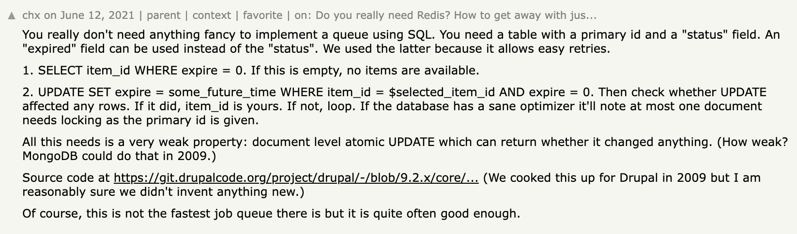
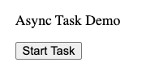
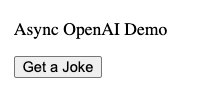

from fastlite import *
Path('queue.db').delete()
db = Database('queue.db')
class QueueItem:
id: int
data: str
expire: int # Unix timestamp
queue = db.create(QueueItem, pk='id')Concurrency For Starlette Apps (e.g FastAPI / FastHTML)
Concurreny fundamentals for Python web apps
Motivation: we often want to call LLMs in Starlette based apps (FastHTML, FastAPI, etc.) apps, and we don’t want to block the server on network calls to APIs.
This post documents my explorations of various approaches that can run tasks in the background without blocking the main process.
Tip
You can see this notebook here.
Using A SQL Database As A Queue
We will use fastlite as the interface to our SQL database.
Why
You are often already using a database for your web application, and if you need to process items in that database with some kind queue, its convenient to use the database itself!

First, let’s define our queue table:
Now, let’s implement the enqueue operation:
def enqueue(data): return queue.insert(data=data, expire=0)For the dequeue operation, we’ll implement the logic described in the comment:
import time
def dequeue():
available_items = queue(where="expire = 0", limit=1)
if not available_items: return None # Queue is empty
item = available_items[0]
future_time = int(time.time()) + 300 # 5 minutes from now
# Step 2: UPDATE SET expire = future_time WHERE id = item.id AND expire = 0
updated_item = queue.update(id=item.id, expire=future_time)
if updated_item.expire == future_time: return updated_item
else: return dequeue()Let’s See It In Action!
# Enqueue some items
enqueue("Task 1")
enqueue("Task 2")
enqueue("Task 3")
# Dequeue and process items
while True:
item = dequeue()
if item is None:
print("Queue is empty")
break
print(f"Processing {item.data}")Processing Task 1
Processing Task 2
Processing Task 3
Queue is emptyUsing Threads To Run Tasks In Background
Next, we want perform proceessing on items from the queue, but do so in the background. We can use the ThreadPoolExecutor from Python’s concurrent.futures module to process items in a thread pool without blocking the main process. Here’s how we can modify our implementation to achieve this:
from concurrent.futures import ThreadPoolExecutor
import time
import threadingdef proc_item(item): # Simulate some work
print(f"Processing {item.data}")
time.sleep(2)
print(f"Finished processing {item.data}")
def worker():
while True:
item = dequeue()
if item is None: break
yield item
def run_queue_processor_background(n_workers=3):
def background_task():
with ThreadPoolExecutor(n_workers) as ex: ex.map(proc_item, worker())
print("Queue processing completed")
# Start the background thread
thread = threading.Thread(target=background_task)
thread.start()
return thread # Return the thread object in case we want to join it laterfor i in range(5): enqueue(f"Task {i+1}") # Enqueue some itemsprocessor_thread = run_queue_processor_background()
print("Main process continues...") # Main process can continue immediatelyMain process continues...
Processing Task 1
Processing Task 2
Processing Task 3
Finished processing Task 2Finished processing Task 1
Processing Task 4
Processing Task 5
Finished processing Task 3
Finished processing Task 4Finished processing Task 5
Queue processing completedAsync Processing
On a completely separate note, we can use async processing, which is very similar to threads. The main benefit of async over threads is that async is easier to debug (stacktrace, breakpoints, etc).
In the code below, we are calling openai library with asyncio. You will see that async is faster than sync in this case, because the majority of the work involves waiting for the response, which is perfect for async
import asyncio
import time
from openai import AsyncOpenAI, OpenAI
prompts = ["Tell me a joke", "What's the capital of France?", "Explain quantum computing", "How many planets are in the solar system?", "What is the meaning of life?", "How many bytes are in a kilobyte?", "When was the first iPhone released?", "What is the capital of Canada?", "What is the capital of Australia?", "What is the capital of the United Kingdom?"]async def async_process_prompt(client, prompt):
response = await client.chat.completions.create(
model="gpt-3.5-turbo",
messages=[{"role": "user", "content": prompt}]
)
return response.choices[0].message.content
def sync_process_prompt(client, prompt):
response = client.chat.completions.create(
model="gpt-3.5-turbo",
messages=[{"role": "user", "content": prompt}]
)
return response.choices[0].message.content
async def async_main():
client = AsyncOpenAI()
start_time = time.time()
tasks = [async_process_prompt(client, prompt) for prompt in prompts]
# you can modify this code (see below) if you wish to just run this completely in the background.
await asyncio.gather(*tasks)
end_time = time.time()
async_time = end_time - start_time
print(f"Async processing time: {async_time:.2f} seconds")
return async_time
def sync_main():
client = OpenAI()
start_time = time.time()
results = [sync_process_prompt(client, prompt) for prompt in prompts]
end_time = time.time()
sync_time = end_time - start_time
print(f"Sync processing time: {sync_time:.2f} seconds")
return sync_time
sync_time = sync_main()
async_time = await async_main()Sync processing time: 9.15 seconds
Async processing time: 3.99 seconds# Compare execution times
print(f"\nSynchronous execution time: {sync_time:.2f} seconds")
print(f"Asynchronous execution time: {async_time:.2f} seconds")
print(f"Time saved with async: {sync_time - async_time:.2f} seconds")
print(f"Speedup factor: {sync_time / async_time:.2f}x")
Synchronous execution time: 9.15 seconds
Asynchronous execution time: 3.99 seconds
Time saved with async: 5.16 seconds
Speedup factor: 2.29xIn the code above, async is only as slow as the slowest single task. calling await asyncio.gather(*tasks) waits until all tasks are finished. However, if you just want to run tasks in the background, you can make the following change:.
- tasks = [async_process_prompt(client, prompt) for prompt in prompts]
- await asyncio.gather(*tasks)
+ tasks = [asyncio.create_task(async_process_prompt(client, prompt)) for prompt in prompts]Limiting Async Tasks
To limit the number of tasks that can be running concurrently, we can use a asyncio.Semaphore. A semaphore allows us to control access to a shared resource, in this case, the number of concurrent tasks. 1 Here’s how it works:
import asyncio
# Create a semaphore with the maximum number of concurrent tasks
max_concurrent_tasks = 5
semaphore = asyncio.Semaphore(max_concurrent_tasks)
async def limited_task(task_id):
async with semaphore:
print(f"Starting task {task_id}")
await asyncio.sleep(2) # Simulate some work
print(f"Finished task {task_id}")
tasks = [limited_task(i) for i in range(5)]
_ = await asyncio.gather(*tasks)Starting task 0
Starting task 1
Starting task 2
Starting task 3
Starting task 4
Finished task 0
Finished task 1
Finished task 2
Finished task 3
Finished task 4FastHTML App With Async
Here’s a minimal FastHTML app that incorporates async. You have to run this in a notebook to try it!
Tip
You can run FastHTML webapps in a Jupyter notebook! This is nice for learning, interactive development, and writing documentation (like we are doing here)! See these docs for more info.
from fasthtml.common import *
from fasthtml.jupyter import *
from fastcore.utils import *
import asyncioDefine the server
Note
The “I’m done” messages will be printed after this cell, because all of the console output is printed where the server is defined in a Jupyter notebook.
#The "I'm done" messages will be printed after this cell
if IN_JUPYTER:
from fasthtml.jupyter import JupyUvi, jupy_app, HTMX
app, rt = jupy_app()
server = JupyUvi(app)
else:
app,rt = fast_app()I'm done
I'm doneasync def long_running_task():
await asyncio.sleep(5) # Simulate a long-running task
print("I'm done")
@rt("/")
def get():
return P("Async Task Demo",
Div(
Button("Start Task", hx_post="/start-task", hx_swap="outerHTML"),
id="task-button"
)
)
@rt("/start-task")
async def post():
# These will run in the background since we aren't calling await.
# There are multiple tasks, and asyncio.gather is one way of kicking them off
asyncio.gather(long_running_task(), long_running_task())
return Div(
P("Task started! Check your console in 5 seconds."),
id="task-button"
)HTMX()
server.stop()Async OpenAI
Let’s show a more realistic example by using OpenAI instead of the sleep. We’ll use the OpenAI API to generate a response, and then print it when it’s done. Here’s the updated code:
from fasthtml.common import *
from fasthtml.jupyter import *
import asyncio
from openai import AsyncOpenAI## The console output (from the background task) will be printed after this cell
if IN_JUPYTER:
from fasthtml.jupyter import JupyUvi, jupy_app, HTMX
app, rt = jupy_app()
server = JupyUvi(app)
else:
app,rt = fast_app()
# Initialize the AsyncOpenAI client
client = AsyncOpenAI()OpenAI response: Why don't skeletons fight each other? They don't have the guts.async def openai_task():
response = await client.chat.completions.create(
model="gpt-4o",
messages=[{"role": "user", "content": "Tell me a short joke"}]
)
joke = response.choices[0].message.content
print(f"OpenAI response: {joke}")
@rt("/")
def get():
return P("Async OpenAI Demo",
Div(
Button("Get a Joke", hx_post="/get-joke", hx_swap="outerHTML"),
id="joke-button"
)
)
@rt("/get-joke")
async def post():
asyncio.create_task(openai_task())
return Div(
P("Joke request sent! Check your console in a minute."),
id="joke-button"
)HTMX()
server.stop()Threads & Processes
Note: Async tasks can be started in the background with threads or processes. You can also spawn threads or processes from other threads or processes as well.
Let’s see the basic functionality of threads and processes in python.
import time
from fastcore.parallel import parallel
def f(x): time.sleep(1); print(x)
a = [1,2,3,4,5,6,7,8]
# parallel starts a new thread when threadpool=True.
def g(): parallel(f, a, threadpool=True)Run with a process
We are starting a thread inside a new process so it runs in the background. Remember, parallel will execute f in a new thread.
It will print kinda wierd because of the threading and things completing at the same time.
from multiprocess import Process
p = Process(target=g)
p.start()154832
76
Run with a thread
Instaed of starting a thread in the background with a process, we can also start it with another thread.
from threading import Thread
t = Thread(target=g)
t.start()51
8
7
6
4
2
3How to choose Threads vs. Processes
See my blog post.
If your tasks involves network calls, consider using threads. For CPU intensive tasks, use processes.
Fastcore
Fastcore has goodies for threads and processes
@threaded decorator
This will make functions run in the background in a new thread or process.
from fastcore.parallel import threaded
@threaded # casuses g to be threaded
def g(): parallel(f, a, threadpool=True)
@threaded(process=True) # casuses h to be run in a process
def h(): parallel(f, a, threadpool=True)g()<Thread(Thread-9 (g), started 6248116224)>12
4
6
3
5
7
8
h()<Process name='Process-3' pid=40899 parent=40147 started>42538761
startthread
We can also start a thread by calling the startthread function.
from fastcore.parallel import startthread
def g(): parallel(f, a, threadpool=True)
startthread(g)
# this will run right away in the main process, since the other code is running in the background
print('hello') hello
12
3
4
5
6
7
8
Footnotes
Thanks to Krisztian for the suggestion.↩︎